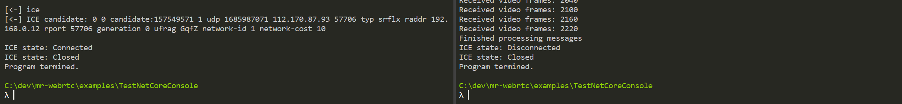

Establishing a WebRTC connection
Now that the signaling solution is in place, the final step is to establish a peer connection.
Continue editing the Program.cs file and append the following:
For debugging purpose, and to understand what is going on with the connection, connect the
ConnectedandIceStateChangedevents to handlers printing messages to console.pc.Connected += () => { Console.WriteLine("PeerConnection: connected."); }; pc.IceStateChanged += (IceConnectionState newState) => { Console.WriteLine($"ICE state: {newState}"); };The
Connectedevent is invoked when the peer connection is established. TheIceStateChangedis invoked each time the ICE status changes. Note that theConnectedevent can be invoked before the ICE status reaches itsIceConnectionState.Connectedstate.In order to verify that the remote video is received, we also subscribe to the
I420AVideoFrameReadyevent. Since this event is invoked frequently, we only print a message every 60 frames.int numFrames = 0; pc.VideoTrackAdded += (RemoteVideoTrack track) => { track.I420AVideoFrameReady += (I420AVideoFrame frame) => { ++numFrames; if (numFrames % 60 == 0) { Console.WriteLine($"Received video frames: {numFrames}"); } }; };To establish a WebRTC connection, one peer (the caller) has to call
CreateOffer(), but not both (the callee just waits). Since the signaler implementationNamedPipeSignaleralready provides a way to distinguish between the two peers, we use that information to select which peer will automatically initiate the call.if (signaler.IsClient) { Console.WriteLine("Connecting to remote peer..."); pc.CreateOffer(); } else { Console.WriteLine("Waiting for offer from remote peer..."); }In this state, the application is working but will terminate immediately once the peer connection is established. To prevent that, simply wait until the user press a key, and then close the signaler.
Console.WriteLine("Press a key to terminate the application..."); Console.ReadKey(true); signaler.Stop(); Console.WriteLine("Program termined.");
Run the two instances of the application again. This time both terminals print a large quantity of messages related to SDP and ICE message exchanges, and eventually establish a WebRTC peer connection.

If launched with the audio or video capture flags, the capturer instance records those media and send them via the network to the other instance, which invokes the remote frame callback and print a message every 60 frames. After that, you can press any key to stop each instance. The signaler and peer connection will close and the program will terminate.

Note: Starting from v2.0 and the introduction of explicit transceiver objects and support for multiple tracks, users have to be careful to add transceivers on the offering side alone (they will be created on the answering side automatically), as there is no automated pairing of existing transceivers in WebRTC. Therefore in this tutorial the offering peer, which is the instance started last (client/caller), needs to be the one which will send audio and/or video (-a/--audio and -v/--video flags). Otherwise the caller will not add any transceiver, and the callee (server; the instance started first) will not be able to send anything. This is only an issue if the callee wants to send some media but the caller doesn't. If they both send, then the caller will add the transceiver and the callee will use it.